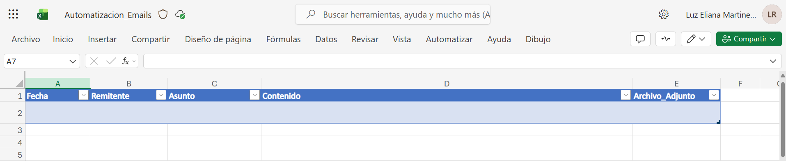

Inicio
¿Que procesos conviene automatizar?
Antes de abrir Power Automate, debes escoger un proceso sencillo para que Copilot pueda convertirlo en un flujo claro. El mejor punto de partida es una tarea repetitiva y facil de describir.
Buen proceso para crear con Copilot
La tarea ocurre muchas veces por semana y sigue una estructura similar.
Puedes describirlo en una frase clara: cuando pase esto, haz esto otro.
La informacion de entrada existe en correos, formularios, archivos o tablas.
El equipo invierte demasiados minutos en leer, clasificar, resumir o responder.
Cuando no conviene empezar con Copilot
| Escenario | Riesgo | Recomendacion |
|---|---|---|
| Casos muy excepcionales | No compensa el esfuerzo de diseno | Dejarlo manual o semiautomatizado |
| Decisiones sensibles | Error con impacto legal o humano | Usar IA solo como apoyo, no como aprobador final |
| Datos incompletos | Respuestas inconsistentes o inventadas | Ordenar la fuente antes de automatizar |
| Proceso mal definido | La IA amplifica el desorden existente | Mapear el proceso primero y luego automatizar |
Plantilla para elegir el proceso
Proceso: [describe la tarea]
Frecuencia: [cuantas veces ocurre]
Entradas: [correos, archivos, formularios, tablas]
Salida esperada: [alerta, registro, respuesta, clasificacion, aprobacion]
Riesgos: [errores posibles o datos sensibles]
Quiero que evalúes: si es lo bastante simple para un primer flujo con Copilot, que disparador tendria, que accion final haria y que revision humana necesita.
Bloque 2
SharePoint para preparar la automatizacion
Antes de crear el flujo, conviene dejar listo el lugar donde vas a guardar la informacion. En este modulo usaremos SharePoint como espacio de trabajo para almacenar un archivo Excel que luego podra ser usado por Power Automate.
¿Que es SharePoint?
SharePoint es la plataforma de Microsoft para guardar, organizar y compartir archivos, listas y espacios de trabajo en equipo. A diferencia de una carpeta personal, SharePoint esta pensado para trabajar con un sitio compartido, donde varias personas o procesos pueden acceder a la misma informacion.

Diferencia entre SharePoint y OneDrive
| Herramienta | Para que sirve | Uso recomendado |
|---|---|---|
| OneDrive | Almacenamiento personal | Archivos propios, borradores y trabajo individual |
| SharePoint | Espacios compartidos del equipo | Carpetas, listas y archivos que deben usar varias personas o automatizaciones |
Practica guiada: preparar el archivo base en SharePoint
| Paso | Accion |
|---|---|
| 1 | Ingresar a SharePoint: abre Microsoft 365 y entra a
SharePoint desde el menu de aplicaciones o portal corporativo. |
| 2 | Buscar tu espacio de trabajo: ubica el sitio donde vas a guardar documentos del equipo. |
| 3 | Crear la carpeta: en la biblioteca de documentos crea
Automatizaciones. |
| 4 | Crear el archivo Excel: dentro de Automatizaciones
crea Automatizacion email. |
| 5 | Crear las columnas: agrega
Fecha, Remitente, Asunto,
Contenido, Archivo_Adjunto. |
| 6 | Dar formato de tabla: selecciona el rango y aplica
Dar formato como tabla. |
| 7 | Asignar nombre a la tabla: usa Tabla_email. |

Estructura del archivo Excel
| Fecha | Remitente | Asunto | Contenido | Archivo_Adjunto |
|---|---|---|---|---|
| 2026-05-11 | usuario@empresa.com | Correo de prueba | Mensaje de validacion para automatizacion | FALSO |
Checklist final de la practica
Bloque 3
¿Que es Power Automate?
Power Automate es la herramienta de Microsoft que permite crear flujos de trabajo automaticos entre aplicaciones y servicios. Sirve para que una accion dispare otra, por ejemplo: cuando llegue un correo, guardar datos en Excel, enviar una notificacion o registrar informacion en SharePoint. En este modulo lo usaras junto con Copilot para crear automatizaciones de forma mas rapida.
1. Entrar y abrir el asistente
| Paso | Accion |
|---|---|
| 1 | Abre la plataforma: entra a make.powerautomate.com con tu cuenta Microsoft 365. |
| 2 | Inicia sesion: usa el mismo correo con el que entras a Outlook, Teams o Copilot. |
| 3 | Ubica el menu izquierdo: revisa Inicio,
Crear, Mis flujos y Plantillas. |
| 4 | Busca la opcion con Copilot: usa la experiencia para describir el flujo con lenguaje natural. |
| 5 | Prepara tu instruccion: define evento, condicion y accion final en una sola frase clara. |
2. Como hablarle a Copilot para que entienda el flujo
Que pasa primero
Ejemplo: cuando llegue un correo nuevo a Outlook.
Que debe revisar
Ejemplo: solo si el asunto contiene la palabra pedido.
Que debe hacer
Ejemplo: enviar una notificacion al responsable comercial.
3. Texto base para pedirle el flujo a Copilot
4. Que debes revisar despues de que Copilot lo genere
| Paso | Revision |
|---|---|
| 1 | Disparador: confirma que Copilot haya usado Outlook y no otro origen incorrecto. |
| 2 | Condicion: revisa que la palabra clave se este buscando en el asunto y no en otro campo. |
| 3 | Accion: valida a quien llega el correo de aviso y que datos incluye. |
| 4 | Conexiones: si Power Automate lo pide, autoriza Outlook o los conectores necesarios antes de guardar. |
Bloque 3
Primer ejercicio con Copilot
En este ejercicio vas a crear una automatizacion que se active cuando llegue un correo de un remitente especifico. Para hacer la prueba, puedes usar tu propio correo y asi validar todo el flujo de principio a fin.
Objetivo del ejercicio
Crear con Copilot un flujo en Power Automate que detecte correos de un remitente especifico y registre automaticamente en el archivo de Excel de SharePoint la fecha, el remitente, el asunto, el contenido del mensaje y si tiene archivo adjunto.
Lo que vas a necesitar
1. Cuenta Microsoft 365 con acceso a Outlook, SharePoint y Power Automate.
2. La carpeta Automatizaciones y el archivo Automatizacion email
listos en SharePoint.
3. La tabla Tabla_email creada dentro del Excel.
4. Un correo de prueba enviado desde tu mismo correo para validar el flujo.
Construccion paso a paso con Copilot
| Paso | Accion |
|---|---|
| 1 | Abre el asistente: entra a la experiencia de creacion con Copilot o al cuadro para describir tu flujo. |
| 2 | Pega la instruccion: pide un flujo que se active cuando llegue un correo de un remitente especifico y lo registre en Excel de SharePoint. |
| 3 | Revisa la estructura propuesta: valida que Copilot use Outlook como
disparador, una condicion por remitente y una accion para agregar una fila en
Tabla_email. |
| 4 | Conecta SharePoint y Excel: selecciona el sitio, la carpeta, el
archivo Automatizacion email y la tabla Tabla_email. |
| 5 | Mapea las columnas: asigna Fecha,
Remitente, Asunto, Contenido y
Archivo_Adjunto con los datos del correo. |
| 6 | Guardar y probar: guarda el flujo y enviate un correo desde tu mismo correo para verificar que la informacion se agregue al Excel. |
Instruccion completa para Copilot
Como saber si Copilot lo hizo bien
Si al enviarte un correo desde tu mismo correo ves una nueva fila en
Tabla_email con la fecha, remitente, asunto, contenido y el valor de
Archivo_Adjunto, entonces el flujo esta funcionando correctamente.
Bloque 4
Herramientas clave del flujo
En este modulo la herramienta principal es Power Automate con Copilot. Las demas herramientas solo aparecen como parte del flujo o como siguiente etapa de madurez.
Que hace cada herramienta aqui
| Herramienta | Fortaleza | Uso recomendado |
|---|---|---|
| Copilot en Power Automate | Convierte lenguaje natural en estructura de flujo | Describir automatizaciones y generar la primera version del flujo |
| Outlook | Fuente de entrada o canal de salida | Detectar correos nuevos y enviar avisos automáticos |
| Power Automate | Ejecutar disparadores, condiciones y acciones | Guardar, probar y publicar el flujo generado por Copilot |
| Claude | Ayudar a mejorar la logica del flujo | Refinar condiciones, detectar escenarios faltantes y proponer mejoras para la automatizacion |
| SharePoint | Repositorio y origen de documentos/listas | Disparar flujos por archivos nuevos, actualizar listas y centralizar trazabilidad |
| Teams o Excel | Extensiones utiles para una segunda version | Notificaciones adicionales, registro y seguimiento del flujo |
Sirve para arrancar rapido
Te ayuda a pasar de una idea escrita a una propuesta de flujo lista para revisar.
No aceptes todo sin mirar
Copilot puede proponer bien la estructura, pero tu debes validar si realmente cumple el objetivo.
Empieza simple y luego mejora
Primero crea la alerta basica; luego agrega Teams, Excel, aprobaciones o resumen con IA.
Bloque 5
Probar, publicar y mejorar lo que Copilot propuso
Despues de que Copilot genere el flujo, tu trabajo es validar que la automatizacion tenga sentido, que las conexiones funcionen y que el resultado sea util en la practica.
Checklist minimo antes de usarlo en serio
| Paso | Revision |
|---|---|
| 1 | Prueba el escenario correcto y el incorrecto: valida un caso que si debe activar el flujo y otro que no. |
| 2 | Revisa el historial de ejecucion: en Mis flujos
confirma si corrio correctamente o si fallo alguna accion. |
| 3 | Ajusta lo que Copilot entendio mal: cambia palabra clave, filtros o condiciones si se activa de mas. |
| 4 | Documenta la instruccion usada: guarda el texto que le diste a Copilot y los cambios manuales. |
| 5 | Mejora en la segunda version: luego puedes agregar Excel, Teams, aprobaciones o IA. |
Como pedir una segunda version a Copilot
Cierre
Proyecto final del curso
En esta actividad cierras el curso creando un flujo con Copilot en Power Automate para un proceso real de Proquident.
Reto integrador
| Paso | Actividad |
|---|---|
| 1 | Elegir un proceso real: selecciona una tarea repetitiva de tu area como correos, consultas o clasificaciones. |
| 2 | Describir el flujo en lenguaje natural: redacta una instruccion clara para Copilot con evento, condicion, accion y resultado esperado. |
| 3 | Generar la primera version con Copilot: deja que el asistente proponga el flujo y luego revisa si entendio bien lo que necesitas. |
| 4 | Ajustar el flujo: corrige destinatarios, filtros, condiciones y contenido de las acciones antes de guardar. |
| 5 | Implementar o prototipar: prueba la automatizacion con casos reales o de simulacion y valida que funcione. |
| 6 | Presentar la propuesta: muestra la instruccion usada, el flujo resultante, la prueba y el valor para el area. |
Entregables
1. Nombre del proceso y problema actual.
2. Instruccion escrita para Copilot.
3. Flujo generado y ajustes realizados.
4. Evidencia de prueba o simulacion.
5. Valor esperado para Proquident.